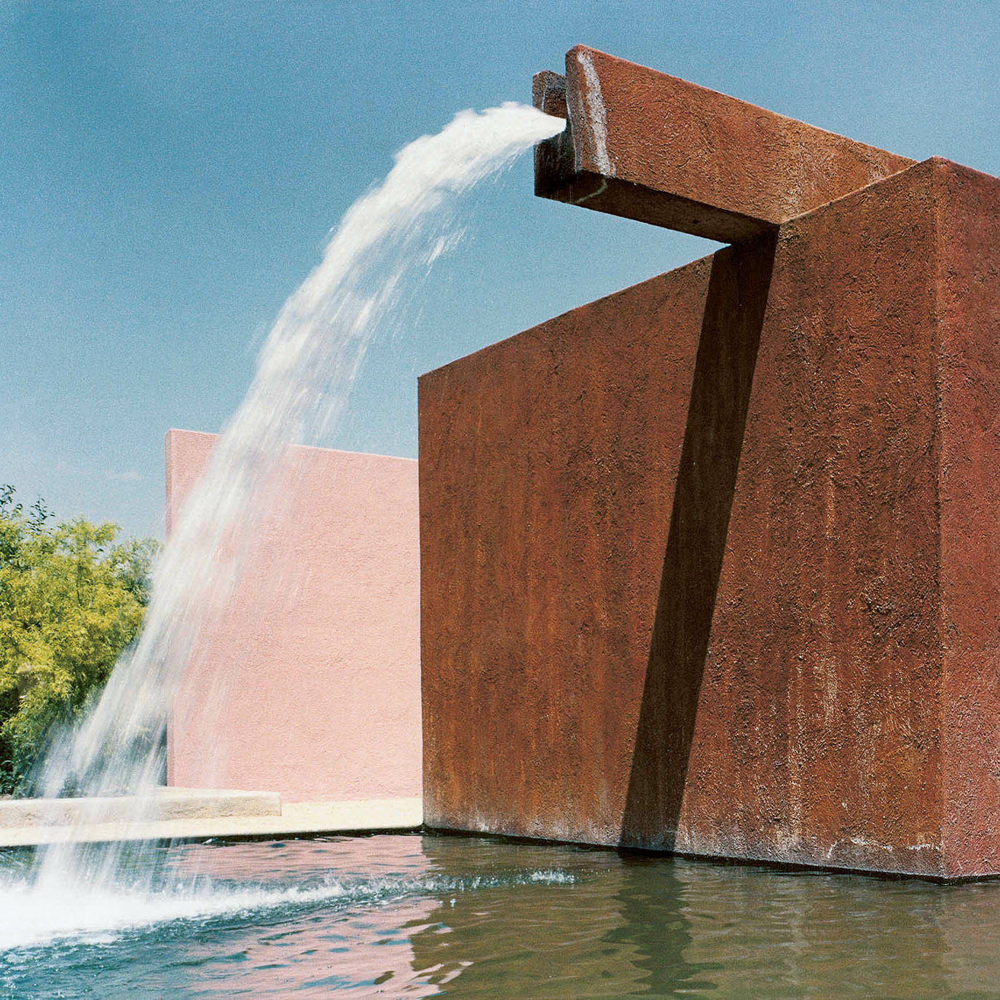

Hongbo WenI am a PhD student at the School of Computer Science, UC Santa Barbara. My PhD advisor is Yu Feng. I am also glad to be guided by Yanju Chen at UC Santa Barbara. Before attending UCSB, I received my undergraduate degree from Tsinghua University and had a two-year industry experience at Megvii and Veridise, focusing on using academic techniques to solve real world problems. Research InterestsI am focusing on helping complex software systems, such as blockchain, zero-knowledge proofs, and operating systems, become more reliable and stable. I am also interested in combing logical reasoning and nerual reasoning and apply those methods in practice. Here are some keywords about my research:
|
 |
Publications(* Equal Contribution) |
|
{{post.venue}}
{{post.title}}
{{post.authors}} {% if post.pdf %} pdf / {% endif %} {% if post.bib %} bib / {% endif %} {% if post.slides %} slides / {% endif %} {% if post.code %} code / {% endif %} {% if post.video %} video / {% endif %} {% if post.poster %} poster / {% endif %} {{ post.excerpt }} |
{% if post.image %}
|
Industry/Academia Engagements(Engagements beyond pure research publications) |
|
From
{{ post.startdate | date: "%Y - %m" }}
to
{% if post.enddate %}
{{ post.enddate | date: "%Y - %m" }}
{% else %}
Now
{% endif %}
{{post.title}}
{{post.subtype}} {{post.description}} {% if post.link %} link / {% endif %} |
{% if post.image %}
|
Honors and Awards |
|
{{ post.date | date: "%Y - %m" }}
{% if post.website %}
{{post.title}}
{% else %}
{{post.title}}
{% endif %}
|
|
Design and source code from Jon Barron's website |